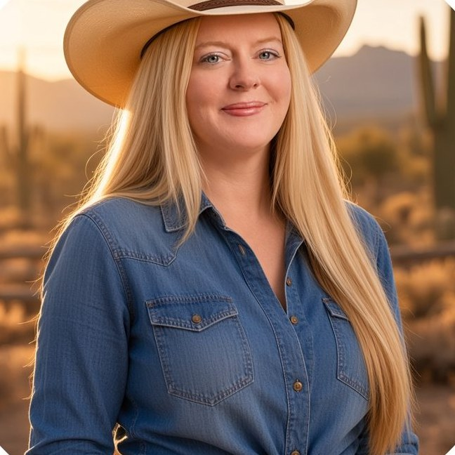
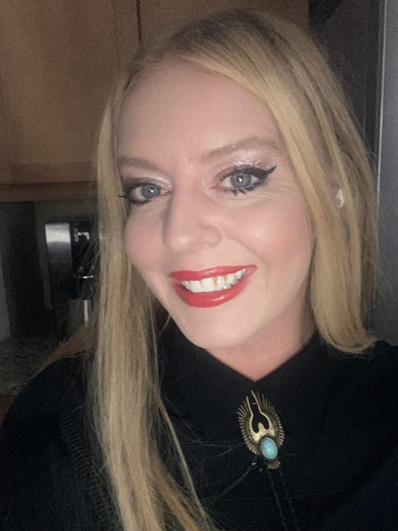
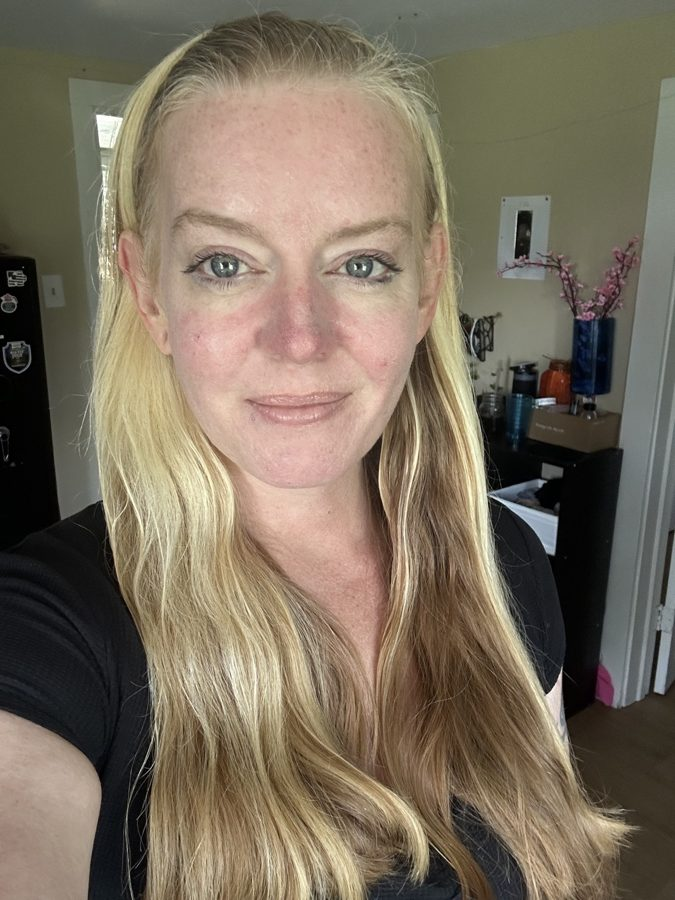

Date Emily.
Librarian brain. Builder hands. Big content energy. You found the hidden page, which already tells her you're curious. Good. Keep going.



Why Emily
- She organizes chaos for a living. 10+ years in marketing and libraries, plus an MLIS. Everything is information, and she knows where to find it.
- She builds things. This website, games, music, a whole crew of bots. She doesn't wait for permission to make something exist.
- She writes. Every day, in public, with her whole chest. Vulnerable on purpose.
- She's strong. Garage gym, new trails, six thousand steps before anyone asks.
- She grows things. Gardens, ideas, people.
- She's self-reliant. She can take care of herself. She's looking for someone to share the adventure with, not someone to rescue her.
- She has faith and a deep sense of purpose: preserve what's worth saving, learn as much as possible while she's here.
- She's been online since Prodigy. Six years old, floppy disks, command line. She has always been this curious.
What she's looking for
A soulmate and life partner. Someone kind. Someone who moves, whether that means lifting, hiking or saying yes to a new trail. Someone curious enough to ask the next question. Someone who respects faith. And ideally someone who builds things too, so you can make cool stuff together.
Green flags
- You read, and you have opinions about what you read.
- You make things just to share them.
- You'd rather go on a hike than argue online.
- You think for yourself.
- You're kind when nobody's watching.
- You can handle a woman with big content energy.
Shoot your shot
Worst case, you sent a nice message to a librarian. Best case, you found your player two.
♥ DM Emily on X